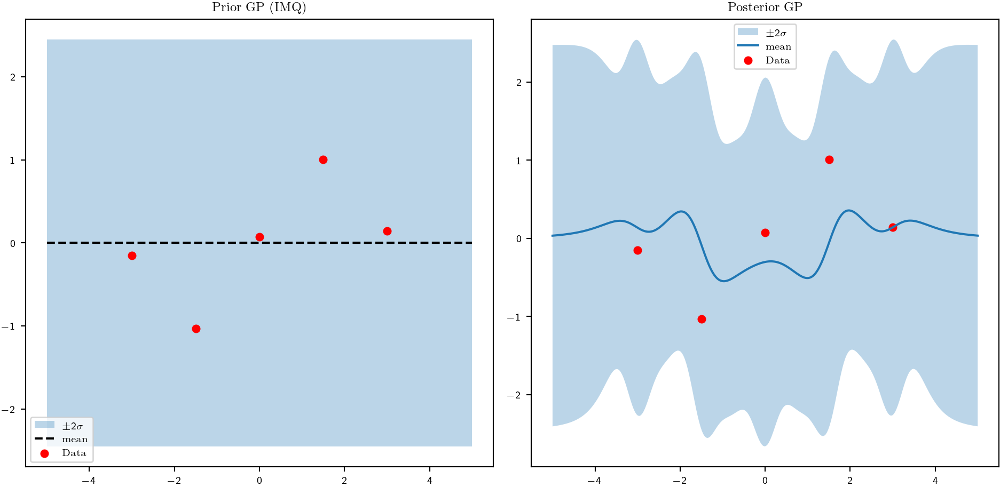

# --- GP prior ---
domain = Euclidean((1,))
codomain = Codomain((1,))
mean = ZeroMeanFun(domain, codomain)
imq_params = IMQParams(lengthscale=jnp.array(0.5), amplitude=jnp.array(1.24751754), beta=jnp.array(1.0))
imq_kernel = IMQKernel(imq_params)
backend = ExactBackend(solverfns=solver_fns)
gp = GP(domain, codomain, mean, imq_kernel, backend)
# --- Data ---
key = jax.random.PRNGKey(0)
Xtr = jnp.linspace(-3.0, 3.0, 5).reshape(-1, 1)
y_clean = jnp.sin(Xtr).squeeze()
noise = 0.04
y = y_clean + noise * jax.random.normal(key, shape=y_clean.shape)
# --- Probes ---
Ftr = Probe(ops=(Partial(0),), fnl=Eval(Xtr))
Xt = jnp.linspace(-5.0, 5.0, 300).reshape(-1, 1)
Fte = Probe(ops=(), fnl=Eval(Xt))
# --- Model / condition ---
lik = GaussianLikelihood(noise=DiagonalNoise(jnp.array([0.01])))
model = GPModel(gp=gp, likelihood=lik)
post = model.condition(Ftr, y)
# --- Prior mean/var (for reference) ---
prior_mean = gp.mean_spec().eval(Xt)[:, 0]
prior_var = jnp.diag(pack_ev2mat(gp.kernel_spec().k0(Xt, Xt), (1,), (1,)))
# --- Posterior mean/var ---
m_post = post.mean(Fte)
v_post = post.variance(Fte)
# --- Plot ---
xplot = Xt.squeeze()
plt.figure(figsize=(10,5))
# Prior
plt.subplot(1,2,1)
plt.title("Prior GP (IMQ)")
plt.fill_between(xplot,
prior_mean - 2*jnp.sqrt(prior_var),
prior_mean + 2*jnp.sqrt(prior_var),
alpha=0.3, label="$\\pm2\\sigma$")
plt.plot(xplot, prior_mean, "k--", label="mean")
plt.scatter(Xtr.squeeze(), y, s=25, c="r", label="Data")
plt.legend()
# Posterior
plt.subplot(1,2,2)
plt.title("Posterior GP")
plt.fill_between(xplot,
m_post.reshape(-1,) - 2*jnp.sqrt(v_post),
m_post.reshape(-1,) + 2*jnp.sqrt(v_post),
alpha=0.3, label="$\\pm2\\sigma$")
plt.plot(xplot, m_post, label="mean")
plt.scatter(Xtr.squeeze(), y, s=25, c="r", label="Data")
plt.legend()
plt.tight_layout()
# mplcyberpunk.add_glow_effects()
plt.show()/var/folders/y9/f2jq2rkn6h16kl4g9j02c2800000gn/T/ipykernel_27756/2933727991.py:63: UserWarning: The figure layout has changed to tight
plt.tight_layout()